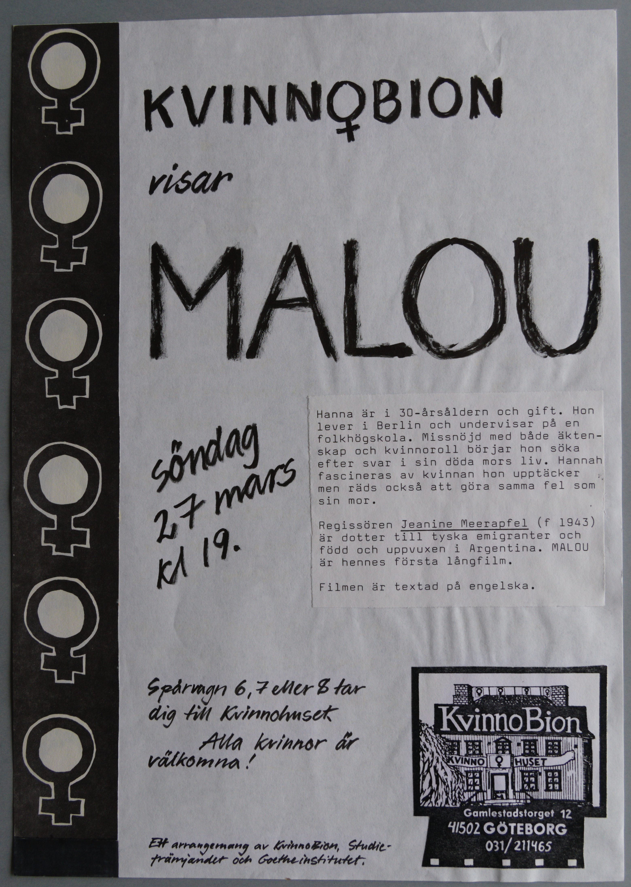
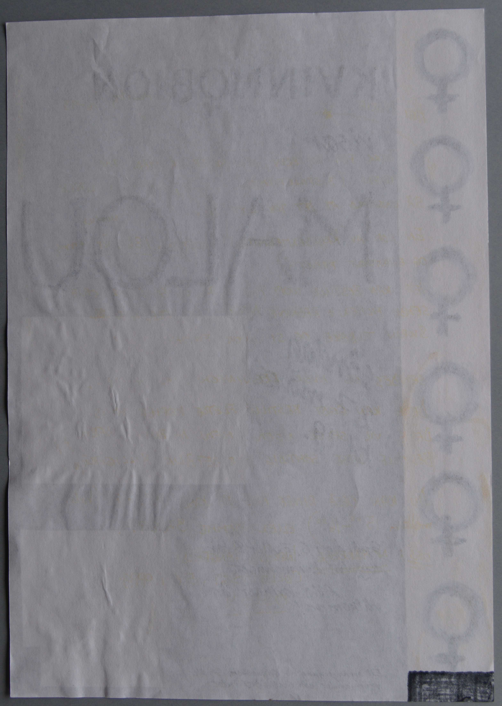

Digitiserad version av programblad från KvinnoBions
vising av filmen Malou
Faksimil
Framsida av programblad
Transkription
KVINN♀BION
visar
MALOU
visar
MALOU
Söndag
27 mars
kl 19.
Hanna är i 30-årsåldern och gift. Hon
lever i Berlin och
undervisar på en
folkhögskola. Missnöjd med både äkten-
skap och kvinnoroll börjar hon söka
efter svar i sin döda mors
liv. Hannah
fascineras av kvinnan hon upptäcker
men räds
också att göra samma fel som
sin mor.
Regissören Jeanine Meerapfel (f 1943)
är dotter till tyska
emigranter och
född och uppvuxen i Argentina. MALOU
är
hennes första långfilm.
Spårvagn 6, 7 eller 8 tar
dig till Kvinnohuset.
Alla kvinnor är
välkomna!
KvinnoBion
KVINNOHUSET
Gamlestadstorget 12
41502
GÖTEBORG
031/ 211465
Ett arrangemang av KvinnoBion, Studie-
främjandet och
Goetheinstitutet.
Faksimil
Baksida av programblad där någon ritat med svart tusch i ena nedre hörnet.
